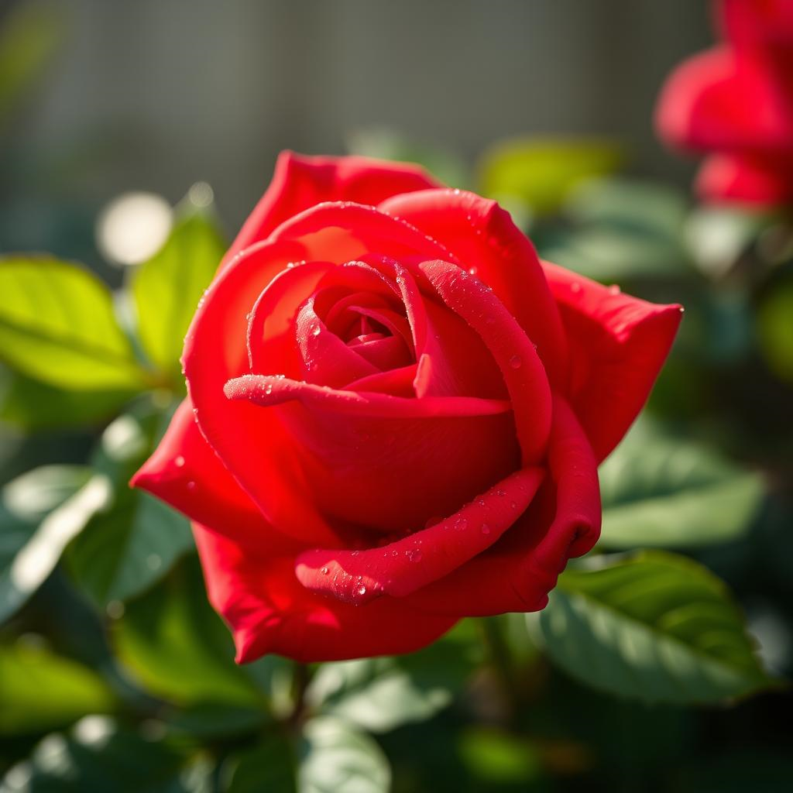
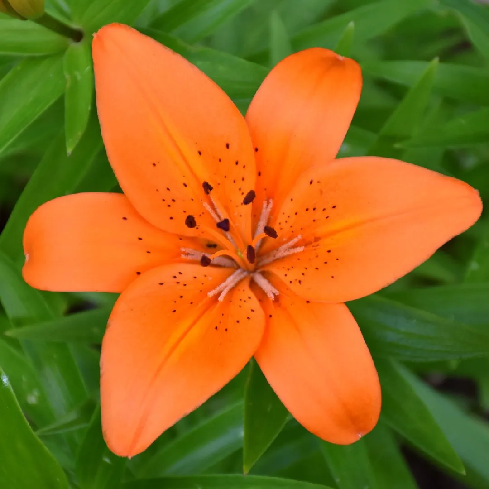
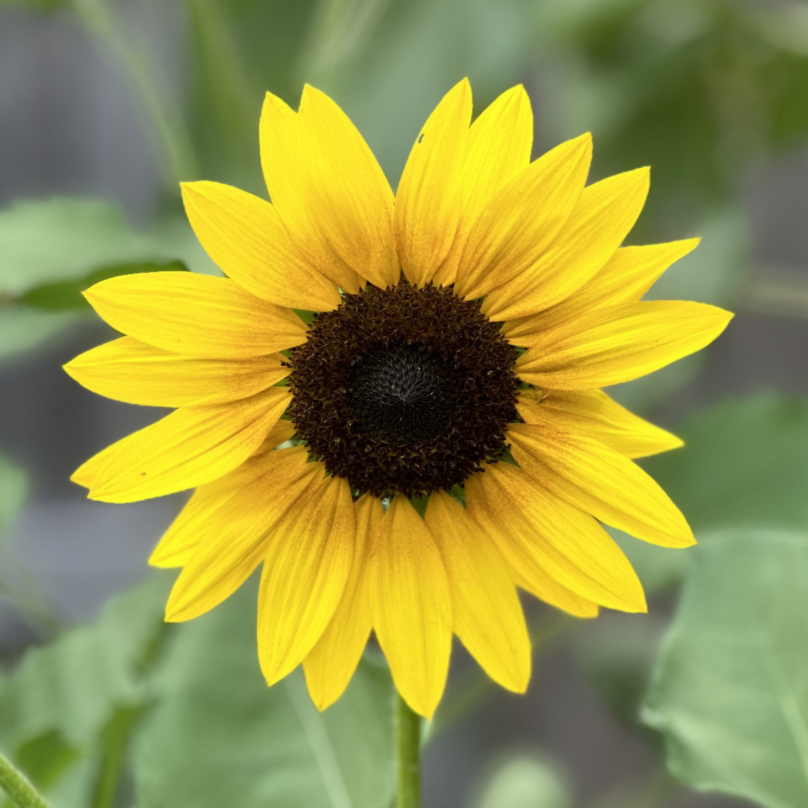
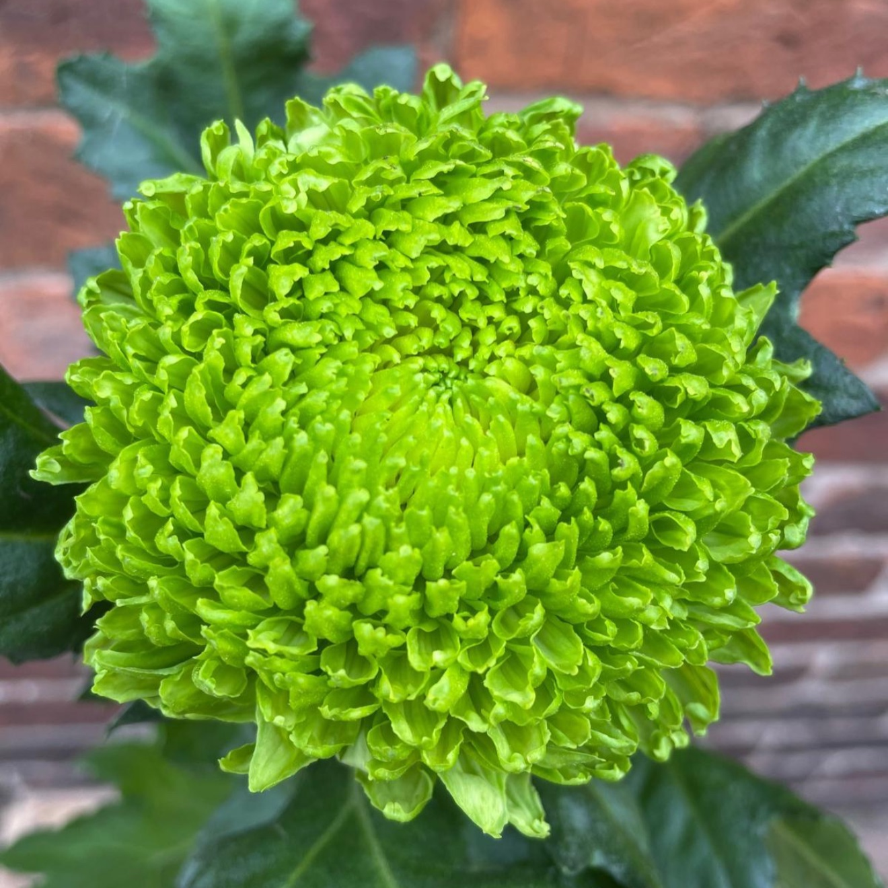
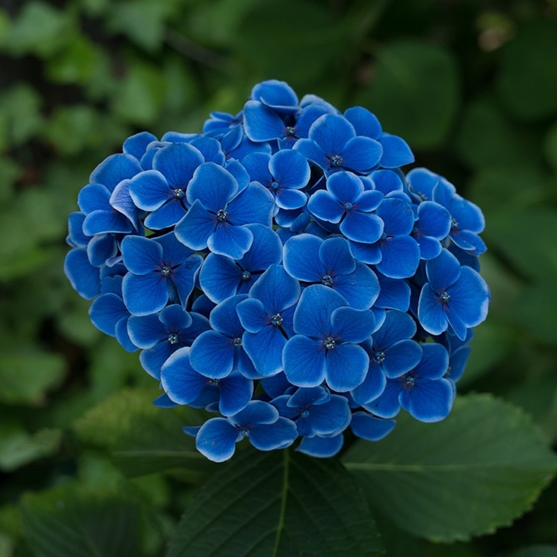
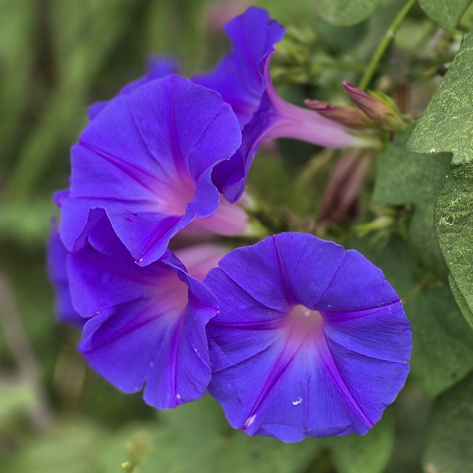
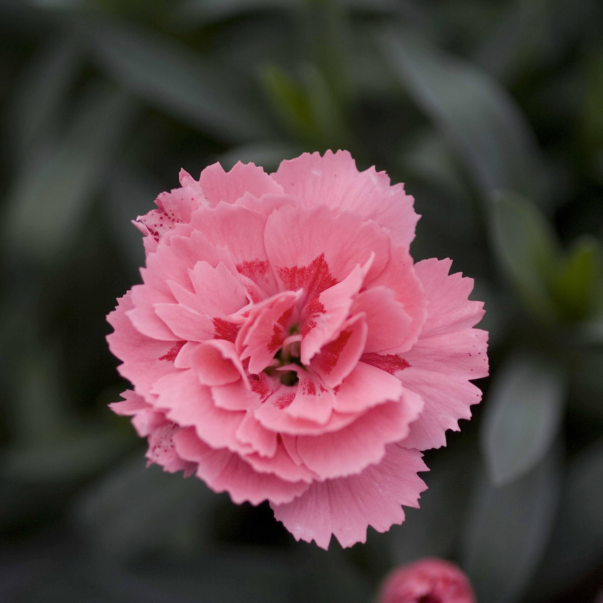
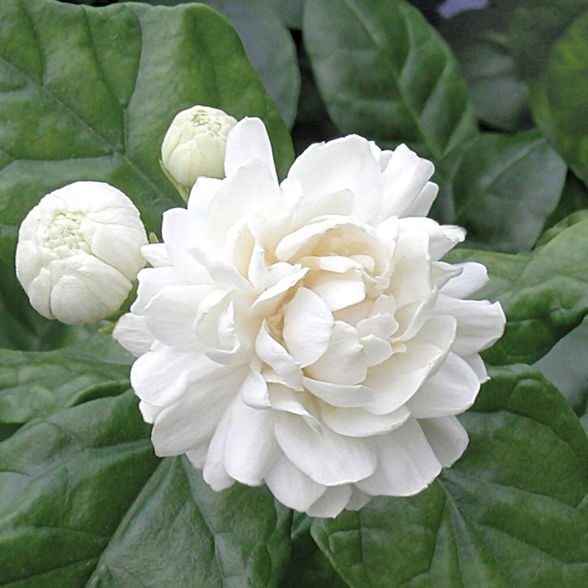

Since ancient times, flowers have served as a silent, expressive language, conveying subtle emotions and deep sentiments when words fall short. Known as floriography, the art of assigning symbolic meanings to blossoms transformed simple floral gifts into intricate coded messages during the Victorian era. Each color and variety carries its own distinct history, allowing bouquets to whisper secret expressions of love, admiration, gratitude, and wisdom.
This gallery explores eight iconic blooms arranged across the spectrum of the rainbow, showcasing the vivid colors and timeless symbolism of the language of flowers. From the fiery passion of the red rose to the serene understanding reflected in the blue hydrangea, discover how each flower's unique meaning can bring beauty and emotional depth to everyday moments.








